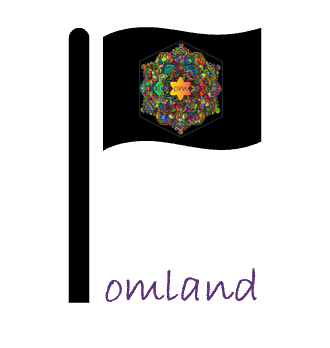

Introduction
Introduction.Rmd
library(om)
#> Loading required package: ROI.plugin.glpk
#> Loading required package: ompr
#> Loading required package: ompr.roi
We are often faced with challenging questions such as “what is the optimum mix of spatially-disaggregated interventions?”. Answering questions of this kind is usually made more difficult by the fact that, in most cases, there are budget limitations in place which mean we can’t afford all possible combinations of intervention packages. om is here to help with this kind of budget-constrained optimisation challenge for malaria modelling.
First, let’s create a simple scenario to test out om. In our country, Omland, there are 10 sub-national units where different malaria intervention packages can be stratified. For each sub-national unit there are 5 different intervention packages that could be implemented. For each sub-national unit and intervention package we can estimate the impact and cost using a malaria simulation model. Unfortunately, Omland has a finite health budget and can only assign $100 to malaria interventions.
How should Omland spend the $100 to maximise the impact of their malaria control campaign?
Let’s start with some malaria model outputs for Omland. This is a data.frame showing the modelled cost and impact of each intervention package option, for each sub-national unit.
omland_output <- data.frame(
unit = rep(1:10, each = 5),
option = rep(1:5, 10),
impact = rep(0:4, 10),
cost = rep(c(0, 5, 10, 15, 20), 10) * rep(c(rep(1, 5), rep(5, 5)), each = 5)
)
head(omland_output)
#> unit option impact cost
#> 1 1 1 0 0
#> 2 1 2 1 5
#> 3 1 3 2 10
#> 4 1 4 3 15
#> 5 1 5 4 20
#> 6 2 1 0 0We also can specify the budget
budget <- 100To optimise Omland’s budget spend in R, we need to provide some inputs as matrices, lets convert our data.frame now
# Each row is a spatial unit, each column and intervention package
impact_matrix <- matrix(omland_output$impact, nrow = 10, ncol = 5, byrow = TRUE)
impact_matrix
#> [,1] [,2] [,3] [,4] [,5]
#> [1,] 0 1 2 3 4
#> [2,] 0 1 2 3 4
#> [3,] 0 1 2 3 4
#> [4,] 0 1 2 3 4
#> [5,] 0 1 2 3 4
#> [6,] 0 1 2 3 4
#> [7,] 0 1 2 3 4
#> [8,] 0 1 2 3 4
#> [9,] 0 1 2 3 4
#> [10,] 0 1 2 3 4
cost_matrix <- matrix(omland_output$cost, nrow = 10, ncol = 5, byrow = TRUE)
# We can see that intervention packages in some spatial units are more expensive than others
cost_matrix
#> [,1] [,2] [,3] [,4] [,5]
#> [1,] 0 5 10 15 20
#> [2,] 0 5 10 15 20
#> [3,] 0 5 10 15 20
#> [4,] 0 5 10 15 20
#> [5,] 0 5 10 15 20
#> [6,] 0 25 50 75 100
#> [7,] 0 25 50 75 100
#> [8,] 0 25 50 75 100
#> [9,] 0 25 50 75 100
#> [10,] 0 25 50 75 100With these inputs, we can now use om to optimise
optimised <- om(z = impact_matrix, cost = cost_matrix, budget = budget)
optimised
#> i j cost z budget_level_1
#> 1 1 5 20 4 20
#> 2 2 5 20 4 20
#> 3 3 5 20 4 20
#> 4 4 5 20 4 20
#> 5 5 5 20 4 20
#> 6 6 1 0 0 0
#> 7 7 1 0 0 0
#> 8 8 1 0 0 0
#> 9 9 1 0 0 0
#> 10 10 1 0 0 0Let’s breakdown Omland’s optimal solution. In the output, i represents the spatial unit and j the intervention package, so for each spatial unit, we have chosen one package. We can also see the cost and impact of each package chosen. In spatial units 1 to 5, we’ve chosen the most expensive package, and in spatial units 6 to 10 Omland doesn’t spend anything. This makes sense - the interventions in spatial unit 1-5 are a lot better value ($s per impact) than in spatial units 5-10!
We can also see that the total cost does not exceed Omland’s budget of $100 - phew!
sum(optimised$cost)
#> [1] 100We can check to see what happens if Omland’s malaria budget increases:
new_budget <- 10000
optimised <- om(z = impact_matrix, cost = cost_matrix, budget = new_budget)
optimised
#> i j cost z budget_level_1
#> 1 1 5 20 4 20
#> 2 2 5 20 4 20
#> 3 3 5 20 4 20
#> 4 4 5 20 4 20
#> 5 5 5 20 4 20
#> 6 6 5 100 4 100
#> 7 7 5 100 4 100
#> 8 8 5 100 4 100
#> 9 9 5 100 4 100
#> 10 10 5 100 4 100Great - now Omland can afford the most expensive, and most impactful, intervention package in all sub-national units!
If some sub-national units do not have all intervention package options available we can just replace them with NA in the impact and cost matrices
impact_matrix[1, 5] <- NA
cost_matrix[1, 5] <- NA
optimised <- om(z = impact_matrix, cost = cost_matrix, budget = new_budget)
optimised
#> i j cost z budget_level_1
#> 1 1 4 15 3 15
#> 2 2 5 20 4 20
#> 3 3 5 20 4 20
#> 4 4 5 20 4 20
#> 5 5 5 20 4 20
#> 6 6 5 100 4 100
#> 7 7 5 100 4 100
#> 8 8 5 100 4 100
#> 9 9 5 100 4 100
#> 10 10 5 100 4 100